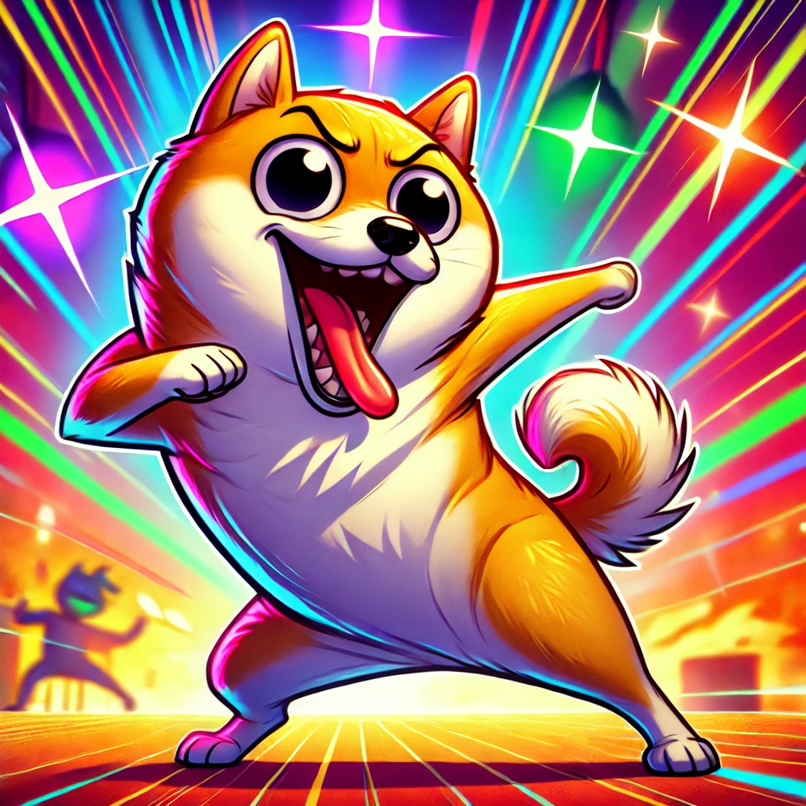

🚀 Rejoignez l'armée WAFU !
Plongez dans l'univers WAFU et découvrez une communauté de passionnés de crypto et de mèmes. En rejoignant notre écosystème, vous faites partie d'un projet déjanté qui vise à révolutionner l'univers des mème coins !
Rejoignez la révolution. Propulsée par les mèmes, alimentée par le chaos !
🔥 Achetez $WAFU maintenant 🔥$WAFU est bien plus qu'un simple mème coin. C'est un mouvement, une communauté vibrante et engagée qui croit en l'esprit de la décentralisation et du fun sans limites. Notre objectif est de créer une plateforme où l'humour et l'innovation crypto se rencontrent, avec des récompenses uniques pour nos détenteurs.
Plongez dans l'univers WAFU et découvrez une communauté de passionnés de crypto et de mèmes. En rejoignant notre écosystème, vous faites partie d'un projet déjanté qui vise à révolutionner l'univers des mème coins !
Découvrez WAFU dans ses moments les plus fous. Que ce soit en train de cuisiner la concurrence ou de faire le show sur la piste de danse, WAFU est toujours prêt à s'amuser !
